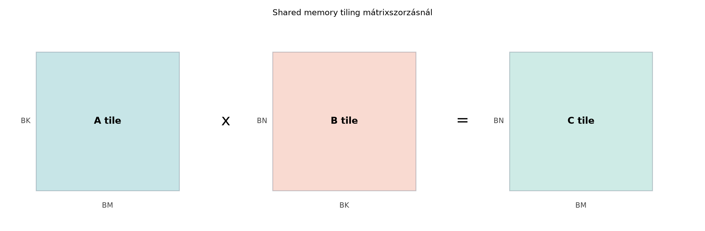

Az előző fejezetben bevezetett Roofline-modell egyik legfontosabb tanulsága, hogy a GPU-k gyakran nem a lebegőpontos műveletek végrehajtásában, hanem a globális memória elérésében fulladnak el. A globális memória (HBM vagy GDDR) sávszélessége hatalmas, de a késleltetése több száz órajelciklus is lehet. Ha egy kernel minden egyes szorzás-összeadás művelethez közvetlenül a globális memóriából olvas, akkor a streaming multiprocesszorok (SM-ek) az idő nagy részében nem számolnak, hanem várakoznak az adatra.
A GPU-gyártók erre a problémára kétféle megoldást kínálnak. Az egyik a hardveres gyorsítótár-hierarchia (L1/L2 cache), amely a hozzáférések térbeli és időbeli lokalitását próbálja kihasználni automatikusan. A másik, ennél sokkal determinisztikusabb és a teljesítménykritikus kernelekben leggyakrabban használt eszköz a shared memory, azaz az SM-en belüli, szoftverből közvetlenül vezérelt, alacsony késleltetésű memória.
A tiling (csempézés) az a programozási minta, amely a számítást olyan adatblokkokra (tile) bontja, amelyek elférnek a shared memoryban. A blokk szálai kooperatívan betöltik a csempét a globális memóriából a shared memoryba, ott szinkronizálnak, majd a számítás során már csak a gyors shared memoryból olvasnak. Ennek a technikának az a célja, hogy a lassú globális memóriából történő olvasások számát minimálisra csökkentsük, miközben az adatokat többször is felhasználjuk.
Ez a fejezet a mátrixszorzás példáján keresztül mélyíti el a tiling fogalmát. A mátrixszorzás azért ideális példa, mert természeténél fogva nagy adat-újrafelhasználást kínál: egy -es mátrixszorzásnál minden egyes elemre -szer hivatkozunk. A naiv globális memóriás kernel ezt az újrafelhasználást nem tudja kihasználni, mert minden hivatkozás egy lassú, tranzakcióalapú memóriaelérést jelent. A tiling ezt az adatmozgatást a gyors, chipen belüli memóriába tereli.
Tekintsük a
mátrixszorzást, ahol
mérete
,
mérete
,
pedig
.
A naiv, tiling nélküli CUDA-kernel minden kimeneti elemhez egy szálat
rendel. A szál kiszámítja a
mátrix (row, col) elemének pontszorzatát:
// Naiv, globális memóriát használó mátrixszorzás (illusztráció)
__global__ void naiveMatMulKernel(const float* __restrict__ A,
const float* __restrict__ B,
float* __restrict__ C,
int M, int N, int K) {
int row = blockIdx.y * blockDim.y + threadIdx.y;
int col = blockIdx.x * blockDim.x + threadIdx.x;
if (row < M && col < N) {
float sum = 0.0f;
for (int k = 0; k < K; ++k) {
// Minden iterációban két globális memóriaolvasás!
sum += A[row * K + k] * B[k * N + col];
}
C[row * N + col] = sum;
}
}Ebben a kódban a belső ciklus minden egyes iterációja két globális memóriaolvasást hajt végre: egyet az mátrixból, egyet a mátrixból. Egy -es mátrixszorzáshoz ez darab globális memóriaolvasást jelent. Bár a hardveres cache-ek valamennyit segítenek a térbeli lokalitáson, a nagy méretű mátrixoknál a cache kapacitása gyorsan kimerül, és a kernel a globális memória sávszélességének korlátjába ütközik.
A kérdés az: hogyan tudjuk elkerülni, hogy minden egyes szorzás-összeadás művelethez a lassú globális memóriához nyúljunk?
A válasz a shared memory, más néven a szálak által közösen használt,
felhasználó által menedzselt scratchpad memória használata. A shared
memory az SM-en belül található, késleltetése nagyságrendekkel kisebb,
mint a globális memóriáé, sávszélessége pedig lényegesen nagyobb. A
CUDA-ban a __shared__ kulcsszóval deklarálhatunk ilyen
memóriát.
A tiling lényege, hogy a mátrixszorzást kisebb, téglalap alakú részfeladatokra bontjuk. Ahelyett, hogy egy szál a teljes dimenzió mentén a globális memóriából olvasna, a blokk összes szálának együttműködésével egyszerre csak egy méretű csempét töltünk be a shared memoryba. Ezután a blokk szálai ebből a gyors csempéből dolgoznak, kiszámítják a részösszegeket, majd a következő csempére lépnek.
A mátrixszorzás esetében a
mátrix egy (row, col) elemének kiszámításához az
mátrix row sorának és a
mátrix col oszlopának pontszorzata szükséges. Ez a
pontszorzat felbontható kisebb, TILE_SIZE hosszúságú
szegmensek pontszorzatainak összegére. Ha a blokk betölti az
mátrix egy TILE_SIZE x TILE_SIZE méretű részmátrixát és a
mátrix egy TILE_SIZE x TILE_SIZE méretű részmátrixát a
shared memoryba, akkor a blokk összes szála el tudja végezni a
részösszeg kiszámítását anélkül, hogy a globális memóriát ismételten
elérné.
Vizsgáljuk meg a memóriaforgalom csökkenését. Egy -es mátrixszorzásnál a tiled kernelben minden egyes elemet nem -szer, hanem csak -szor olvasunk be a globális memóriából. Ha , akkor a globális memóriaolvasások száma a naiv kernelhez képest -ed részére csökken. Ez a nyereség az, ami miatt a tiling a teljesítményoptimalizálás egyik sarokköve.
A tiling tervezésekor az egyik legfontosabb döntés a
TILE_SIZE (csempeméret) megválasztása. Ez a paraméter
szorosan összefügg a kernel launch konfigurációjával, vagyis a
blokkmérettel.
A szokásos minta az, hogy a blokk szálainak száma megegyezik a csempe
elemeinek számával. Ha a csempe négyzet alakú, akkor
blockDim.x = blockDim.y = TILE_SIZE, és a blokkban
TILE_SIZE * TILE_SIZE szál van. Ennek a kialakításnak
előnye, hogy a globális memóriából a shared memoryba történő betöltés
során a szálak természetes módon, egyesével lefedik a csempe elemeit,
ami koalens hozzáférést tesz lehetővé.
A TILE_SIZE megválasztását több hardveres korlát is
szabályozza:
TILE_SIZE legfeljebb 32 lehet
(mert a
szál).TILE_SIZE = 32 és float típusú adatokkal
dolgozunk, akkor a két csempe mérete
bájt, ami 8 KB. Ez könnyedén elfér a shared memoryban.TILE_SIZE nem feltétlenül jobb. Minél nagyobb egy blokk,
annál több regiszterre és shared memoryra van szüksége, ami csökkenti az
SM-en egyidejűleg futtatható blokkok számát. Az alacsony occupancy
csökkenti a latency hiding képességét. A TILE_SIZE = 16
(256 szál blokkonként) gyakran jobb választás lehet, ha az SM-en így
több blokk fér el egyszerre.A gyakorlatban a TILE_SIZE = 16 és
TILE_SIZE = 32 a leggyakoribb kiindulópontok a
mátrixszorzáshoz, és a teljesítményt mérésekkel kell finomhangolni.
Nézzük meg a tiled mátrixszorzás egy teljes, jól működő implementációját CUDA C++-ban. Ez a kód a fejezet laborjának alapját képezi.
// Tiled mátrixszorzás (illusztráció, nem futtatott benchmark)
// A: M x K, B: K x N, C: M x N. Típus: float (FP32)
#define TILE_SIZE 16 // Vagy 32, a hardveres korlátok függvényében
__global__ void tiledMatMulKernel(const float* __restrict__ A,
const float* __restrict__ B,
float* __restrict__ C,
int M, int N, int K) {
// Statikus shared memory a két csempének
__shared__ float As[TILE_SIZE][TILE_SIZE];
__shared__ float Bs[TILE_SIZE][TILE_SIZE];
// Blokk- és szálindexek
int bx = blockIdx.x;
int by = blockIdx.y;
int tx = threadIdx.x;
int ty = threadIdx.y;
// A kimeneti mátrix (row, col) elemének globális indexe
int row = by * TILE_SIZE + ty;
int col = bx * TILE_SIZE + tx;
float sum = 0.0f;
// Végighaladunk a K dimenzión a csempéken
for (int tile = 0; tile < (K + TILE_SIZE - 1) / TILE_SIZE; ++tile) {
// Kooperatív betöltés: minden szál egy elemet olvas be
// A mátrix: row sor, tile*TILE_SIZE + tx oszlop
int aCol = tile * TILE_SIZE + tx;
if (row < M && aCol < K) {
As[ty][tx] = A[row * K + aCol];
} else {
As[ty][tx] = 0.0f; // Határfeltétel kezelése
}
// B mátrix: tile*TILE_SIZE + ty sor, col oszlop
int bRow = tile * TILE_SIZE + ty;
if (bRow < K && col < N) {
Bs[ty][tx] = B[bRow * N + col];
} else {
Bs[ty][tx] = 0.0f; // Határfeltétel kezelése
}
// Szinkronizálás: minden szálnak látnia kell a teljes csempét
__syncthreads();
// Részösszeg kiszámítása a gyors shared memoryból
#pragma unroll
for (int k = 0; k < TILE_SIZE; ++k) {
sum += As[ty][k] * Bs[k][tx];
}
// Szinkronizálás: ne írjuk felül a shared memóriát,
// amíg mindenki be nem fejezte az olvasást
__syncthreads();
}
// Eredmény kiírása a globális memóriába
if (row < M && col < N) {
C[row * N + col] = sum;
}
}A kernel működése a következő lépésekből áll:
TILE_SIZE-os lépésekben. Minden
iterációban a blokk összes szála kooperatívan betölti az
mátrix egy TILE_SIZE x TILE_SIZE méretű részmátrixát az
As shared memoryba, és a
mátrix egy hasonló részmátrixát a Bs shared memoryba. A
(ty, tx) szál az As[ty][tx] és
Bs[ty][tx] elemeket tölti be.__syncthreads() hívás biztosítja, hogy a blokk minden szála
befejezze a betöltést, mielőtt bármelyik szál elkezdené a számítást. E
nélkül az egyik szál olyan shared memóriaelemet olvashatna, amelyet egy
másik szál még nem írt be.TILE_SIZE hosszúságú rész-pontszorzatot számítja ki a
shared memoryban tárolt adatokból. Ez a rész már nem igényel globális
memóriaelérést.__syncthreads() hívás biztosítja, hogy minden szál
befejezze az aktuális csempe olvasását, és senki ne írja felül a shared
memóriát új adatokkal, amíg a régieket még használják.sum értéket a
globális memóriában lévő
mátrixba.A kernel launch konfigurációja a következő:
// Launch konfiguráció
dim3 blockDim(TILE_SIZE, TILE_SIZE); // Pl. 16x16 = 256 szál
dim3 gridDim((N + TILE_SIZE - 1) / TILE_SIZE,
(M + TILE_SIZE - 1) / TILE_SIZE); // Pl. 64x64 blokk 1024x1024-es mátrixhoz
// Futtatás
tiledMatMulKernel<<<gridDim, blockDim>>>(d_A, d_B, d_C, M, N, K);A tiled kernelek implementálása során a fejlesztők gyakran elkövetnek néhány jellemző hibát:
Elmaradt __syncthreads(). Ez a
leggyakoribb hiba. A szinkronizáció elhagyása versenyhelyzetet (race
condition) eredményez: egy szál olyan shared memóriaelemet
olvashat, amelyet egy másik szál még nem írt be, vagy éppen felülír. A
végeredmény nem determinisztikus, és a hiba gyakran csak nagy méretű
futtatásoknál jelentkezik. A helyes megoldás az, hogy minden csempe
betöltése után és a csempe elhagyása előtt kötelező a
__syncthreads() hívás.
__syncthreads() divergens ágban. Ha
a __syncthreads() hívás egy if-feltételen
belül van, amely a blokk szálainak csak egy részére igaz, a kernel
holtpontra (deadlock) juthat, vagy a viselkedés nem definiált.
A CUDA programozási modell szerint a __syncthreads()-t a
blokk minden szálának el kell érnie. A helyes megoldás az, hogy a
szinkronizációt feltétel nélküli kódrészben helyezzük el, vagy
gondoskodjunk arról, hogy a feltétel a blokk minden szálára ugyanazt az
eredményt adja.
Indexelési hibák a határokon. Amikor a mátrix
mérete nem osztható TILE_SIZE-szal, a betöltés során
ellenőriznünk kell, hogy a globális memória indexe érvényes-e. A fenti
kódban a row < M && aCol < K feltétel
biztosítja, hogy a határon túli olvasás helyett nullát írjunk a shared
memóriába. Ez a technika egyszerű és hatékony, mert a nullával való
szorzás nem befolyásolja a részösszeget.
Shared memory bank conflict. A shared memory
fizikailag bankokba van szervezve (jellemzően 32 bank). Ha egy warp
szálai úgy férnek hozzá a shared memóriához, hogy többen is ugyanazt a
bankot használják, a hozzáférés szerializálódik. A mátrixszorzás
kerneleknél a As[ty][k] és Bs[k][tx]
hozzáférések általában nem okoznak konfliktust, mert a warp szálai a
k index mentén különböző bankokat érnek el. A bank
conflictok elkerülése azonban egy fontos optimalizálási szempont, amit a
következő fejezetek részletesen tárgyalnak.
A labor célja a naiv, globális memóriás mátrixszorzás és a tiled, shared memóriát használó kernel teljesítményének összehasonlítása. A labor nemcsak a kernel implementálását, hanem a helyes mérési módszertan alkalmazását is gyakorolja.
Feladat
Implementáld a fenti tiledMatMulKernel kernelt, és
futtass méréseket egy valós GPU-n. Hasonlítsd össze a futási időt a
naiveMatMulKernel futási idejével azonos bemeneti méretek
mellett. A méréshez kötelező a CUDA hibakezelés
(cudaGetLastError, cudaDeviceSynchronize)
használata.
Build parancs (példa)
# CUDA C++ (C++17) fordítás
nvcc -arch=sm_86 -std=c++17 -O3 -Xcompiler -Wall -o matrix_mul_tiled matrix_mul_tiled.cuFuttatási parancs (példa)
# Izolált labor környezetben
./matrix_mul_tiledGPU-konfiguráció és mérési napló
A mérés megkezdése előtt rögzítsd a környezet paramétereit:
<NVIDIA GeForce RTX 3060>
(példa, helyettesítsd a valós modellel)<550.54.14>
(példa)<12.4> (példa)<8.6>
(példa)<Ubuntu 22.04 x86_64> (példa)<1024, 1024, 1024>cudaEvent_t vagy
std::chrono + cudaDeviceSynchronizeMért eredmények (példa, nem ellenőrzött adat)
| Kernel | Átlagos futási idő (ms) | Szórás (ms) | Elért sávszélesség (GB/s) | Várt sávszélesség (GB/s) |
|---|---|---|---|---|
| Naiv (global memory) | 12.5 |
0.8 |
~200 |
100–250 |
| Tiled (shared memory) | 4.2 |
0.3 |
~600 |
400–700 |
A várt és mért eredmények elkülönítése
A táblázatban a mért értékek a labor során rögzített nyers adatok, a várt értékek pedig a hardver specifikációja és a korábbi tapasztalatok alapján becsült tartományok. A tényleges mérési eredmények jelentősen eltérhetnek a fenti példaértékektől a CPU, a GPU, a memória-órajel, a power limit és a háttérterhelés függvényében. A fejezet célja nem egy konkrét szám reprodukálása, hanem a tiling hatásának kimutatása: a tiled kernelnek ugyanazon a hardveren, azonos input mellett legalább 2–3-szor gyorsabbnak kell lennie a naiv kernelnél.
Ellenőrzés
A kernel helyességét egy CPU-n futó referenciamegoldással ellenőrizd.
A GPU és CPU eredmények közötti maximális abszolút hibaküszöb legyen
1e-4 (FP32 esetén). Ne feledkezz meg a hibakódok
ellenőrzéséről a kernel indítása után:
// Kötelező ellenőrzés a kernel indítása után
cudaError_t err = cudaGetLastError();
if (err != cudaSuccess) {
fprintf(stderr, "CUDA hiba: %s\n", cudaGetErrorString(err));
// Itt kezeljük a hibát, például kilépünk a programból
}
cudaDeviceSynchronize();__syncthreads() hívást elhagyjuk a
csempe betöltése után? Milyen típusú hibát okoz, és miért nem mindig
jelentkezik?TILE_SIZE optimális értékét?A shared memory tiling a GPGPU programozás egyik legalapvetőbb és leghatékonyabb eszköze. Lehetővé teszi, hogy a fejlesztő explicit módon irányítsa az SM-erőforrást, és a globális memóriaforgalmat a minimálisra csökkentse. A mátrixszorzás példáján bemutatott minta – kooperatív betöltés, szinkronizáció, számítás, szinkronizáció – szinte minden olyan kernelben visszaköszön, amely többszörösen újrahasznosítja az adatokat (például konvolúciók, stencil műveletek, transzponálás).
A tiling azonban csak az első lépés. A kernel jelenlegi változatában
a szálak a globális memóriából történő betöltés idejére várakoznak: a
__syncthreads() hívás megállítja őket, amíg az összes adat
meg nem érkezik. A következő fejezetben ezt a várakozási időt fogjuk
elrejteni aszinkron memóriaműveletekkel és adatmozgatási
csővezetékekkel, amelyek a betöltést és a számítást párhuzamosítják.